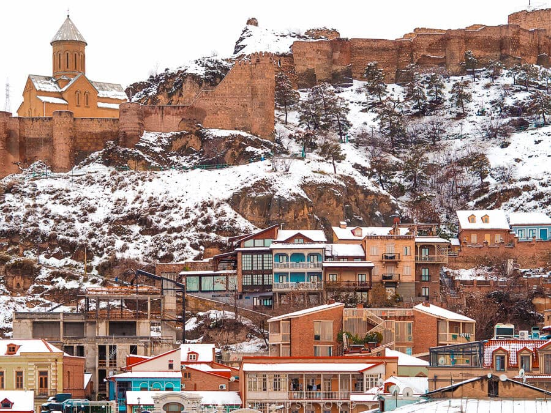
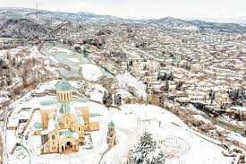

<!DOCTYPE html>
<html lang="en">

<head>
    </body>

</html>
<meta charset="UTF-8">
<meta name="viewport" content="width=device-width, initial-scale=1.0">
<title>tbilisi c6 </title>
<link rel="stylesheet" href="style.css">
</head>

<body>
    <header>
        <h1>GEORGIAN CITIES IN THE WINTER TIME </h1>
    </header>
    <main>
        <article>
            <h2>TBILISI</h2>
            
            <h3>It doesn't snow much in winter in Tbilisi, but it gets very cold.There are many festivals in Tbilisi in winter, and on New Year's Eve there is great excitement and the whole sky is filled with fireworks. </h3>
        </article>
        <article>
            <h2></h2>BATUMI</h2>
            
            <h3>It's not too cold in Batumi in winter, but it rains a lot.Even though Batumi is not as big as Tbilisi, there are also nice New Year celebrations there.</h3>
        </article>
        <article>
            <h2>KUTAISI</h2>
            
            <h3>In winter, there is a lot of snow and some rain in Kutaisi. </h3>
        </article>
        <article>
            <h2>MTSKETA</h2>
            
            <h3>In winter in Mtskheta it is cold and it rains a little</h3>
        </article>
    </main>

    <body>

        </html>